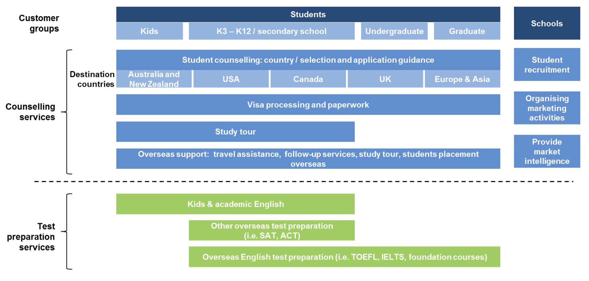

“I would still sign up with a consultancy if I were given another chance,” said Frank Zhang, who is unsatisfied with the counselling services when applying for a master’s degree in finance engineering.
“After all, I could not have enough time to finish all the paperwork myself. I have to take tests until I get competitive scores. While no one else can help me improve my scores, I can find people to prepare the application materials for me,” Frank explained.
According to the report on consultancies with main businesses on overseas studies by GOL.EDU.CN in 2015, about 85 percent of students who are looking for overseas studies choose to sign up with counseling firms.
For those who do not choose counseling firms, over 50 percent of them believe the firms are not trustworthy. Indeed, it reasonable enough for them to have that thought.
Most of those firms are not qualified for the business. According to the data from the foreign related regulatory department under the Ministry of Education of China , there are only around 600 agencies having qualifications for providing overseas studies related services. However, the reality is that there are several thousands of companies doing such kind of business in China.
Also, the geographical distribution is quite uneven since over 13 percent of those qualified agencies locates in Beijing while some provinces just have 1 or 2 percent of those agencies.
“My parents went to Beijing where the headquarter of New Oriental Education locates to sign the contract even though there are several branches of New Oriental in my hometown in Liaoning Province. They think teachers in Beijing have more and better resources than those in my hometown,” Frank said.
Many counseling firms emphasize they are not “foreign-related agencies” but “consultancies” which are not under the regulations of the Ministry of Education. They will provide guidance for applicants on school choosing, personal statement writing or editing, application form filling and other miscellaneous stuffs including score sending, or even reference letter related services. Typically, they will charge 20,000 to 50,000 yuan service fee depending on the destination countries, while Hong Kong and UK is cheaper, US is more expensive.
Different from traditional overseas agencies that make money by referring students with poor academic backgrounds to diploma mills overseas, counseling agencies are targeting students aiming at top universities, like Frank.
If calculating based on the data from the Chinese Ministry of Education in 2015 that 523,700 Chinese students went abroad to study and the fact that 85 percent of them signing up with counseling firms, the annual turnover of the consultancy market amount to 13.5 billion yuan.
In recent years, the rapid development of internet along with the e-commerce changes the pattern of the industry. While traditional consultancies charge high prices but provide unsatisfactory services, many Customer to Customer (C2C) online platforms which connect students with individual consultants holding overseas diploma of various backgrounds are gaining trust from parents and students.
Xinying Han, the CEO of the 17dianbo, a C2C online platform which has already received 5 million angel investment in January 2016, noted that their online services was more like a supplement for offline traditional counselling services. “Many students who have signed with consultancies will still ask their senior alumni for help.”
That is quite true. When studying overseas has been a heat hot topic for years in China, there have already been thousands of students studying or having graduated from world famous universities.
Before those online platforms, many students have to find their potential individual consultants, such as alumni, friends, or relatives through personal relationship. But whether those people who have experienced the whole application procedures will have time and be willing to help is an issue.
Seeing this increasing need of individual consultants who are more qualified and familiar with overseas schools, many C2C platforms specializing overseas studying counselling are founded. A number of C2C platforms such as Dear Mentor, 17dianbo, and 51liucheng, rise in response to that. Some of them have already received A-Round Venture Capital or even listed on the National Equities Exchange and Quotations in China.
For individual consultants, most of whom are pursuing degree overseas, online platforms provide them a chance to earn their livings and to relieve their financial burden. They can list services they would like to provide and charge based on the time taken to finish the service. Thus, their academic lives will not be disturbed much.
Besides, they need to guarantee the high quality of services to maintain their personal reputation in this industry. Jessica, studying at Columbia University, is now a registered mentor on the Dear Mentor platform.
For students, the charging system of those platforms are more flexible than traditional counselling firms. They will list the price for a certain service per time, and thus the total cost will be much lower than signing up with traditional consultancies. In addition, the comments system and rating mechanism also help to improve the service quality.
When Jessica Tian applied for her master’s degree, she found her consultant through the Gter forum, which is one of the most popular overseas studies forums in China. “I noticed that she had posted many useful tips on the forum and thus I joined her Wechat group through scanning the QR code on the posts.” The individual consultant was then a graduate student in University of Southern California majoring in communication management and she only provided services to students pursuing journalism or communication related majors. This is the common practice among individual consultants to ensure their service quality. It is also for the students’ good to maintain the consistency between the consultant’s strength and their goals.
“She charged me based on the number of schools that I was applying for. I have applied for eight schools and the total cost was 25,800 yuan,” Jessica said. “She asked me several questions regarding my past experiences, interests, and future goals and I gave her a 4000-word answer. She also sent me her work plans and personal statements that she had finished.”
Xinying said, “For online counselling companies, we can only choose low cost strategies to get clients.” While traditional counselling firms spend great effort on offline campus promotion, those C2C platforms pays their attention on online channels in terms of promotion strategies.
Dear Mentor have launched several waves of viral marketing on social media. They expect target consumers to add friends with their social media operators, repost their promotion information on social media, and send the screenshot of the repost to operators for test-preparation packages of several gigabytes.
Apart from counselling firms, many agencies have also moved online. 51offer is one of the first batch of overseas agencies that provide free application services for students. Instead, they will charge schools that admit their students. Launched in 2013, 51offer plans to use big data to reduce the labor cost and improve the application efficiency by standardized services. The company has received three rounds of investment with a total amount of US$50 million venture capital by Yongjin Group, NEA which also invested in Uber and Groupon, and the STARR companies.
Online channels are crucial these days for businesses in this information era. Particularly, online forums sharing application information, successful cases of previous students, or tips for living overseas attracted millions of people.
Many students planning to study overseas, not limited to those who have not sign up with consultancies, will spend hours on those forums searching and downloading useful materials, asking questions for help, or finding pals who are applying for same school or same major. Popular forums in China include Gter, Taisha, and etc.
Gter founded in 2000 has over 1.53 million users. Like the GradCafe, Gter provides an offer list for students checking the admission results for reference. It divides its forum into different sections based on majors, overseas study destinations, and test preparations.
Taisha which claims itself to be the first consultancy listing on the A shares stock market is indeed a subsidiary of the listed company Huawen Media Investment under the code 000793 on Shenzhen Stock Exchange. But still, it is one of the largest consultancies on overseas studies in China’s market.
Taisha growing up from a BBS now has a Page View of 3 million in 2015. Its internet feature inspired the company to sell online advertisements, most of which are online games. The company also provide short-term study tours and English tutoring programs.
In the annual report, the company claims it has provided high-end counselling services for over 100,000 students. The number of signed up student in 2015 was 4,648, representing an annual increase of 16.49 percent. Seeing the increasing competing market in the first-tier cities, the company said “We will gradually explore the overseas studying market in second- and third-tier cities.”
According to the annual report of its listed parent company, Chenghuai Technology which operates Taisha forum recorded 88.45 million net profit in the fiscal year 2015, up 36.82 percent from the previous year.
But the traditional Personal Computer based forum are facing increasing challenges. The number of new registered users has dropped 36.69 percent compared with that of 2014 since most people are moving to mobile side.
Even though, online platforms are the attracting attention in recent years, still most students and parents will sign up with traditional agencies.
Eic Education, one of the largest Mainland overseas study agencies, planned to list on the Hong Kong bourse targeting at up to US$5 million in 2015. But it withdrew the application in May 2016.
Providing counseling services for over 60,000 students per year, it has a market share of 16 percent in the overseas study counseling market in China according to the company’s report. The majority, or 78 percent, of the company’s revenue comes from its counseling division while the other 22 percent were from the test preparation services.
It has 27 branches across the Mainland China and eight international branches in the United States, United Kingdom, Australia, Canada, and Hong Kong. In addition to contractual relationships with over 900 Partner Education Institutions globally, the company also has relationships with over 2,000 other Education Institutions.
Business Model of Eic Education (Source: Eic Education Website)
“It is my parents who made the decision to sign up with a counseling firm. I am confident to do all the preparations myself and I don’t trust those agencies,” said Frank who appears in the beginning of the story.
“At the beginning stage when I know nothing about applying for overseas schools, I was quite happy that they knew a lot about those schools and programs. But later, I find that I can also acquire that much of information if I read through all the official websites of those schools myself”, Frank said.
“The only outcome of hiring a counselling team is to find psychological comfort, particularly for parents.” claimed Frank. “Parents can hardly help me in the current stage so that they would like to hire someone in place of themselves to help me. Their anxiety can also be relieved by paying enough money to a nation-wide famous institution. The payment indicates that they have done all things they can do.”
“It was too stressful to finish all the tasks myself”, said Jackie Cui who tried to apply for overseas universities independently but later signed up a DIY package with a Beijing-based consultancy.
“I know that ultimately I need to put some efforts in polishing my personal statement,” she added.
Different from the full package, the DIY package only provides editing and polishing but not the whole drafting service. This DIY package cost her 29,800 yuan while the full package provided by her consultancy is 46,800 yuan.
Jin Song, mother of Jackie, said “My daughter was not that confident about herself at that time. Also, nearly all of her friends who are competitive candidates for top universities sign up with consulting firms. We decide to go for the consultancy just for psychological comfort.”
“All I need to do, theoretically, is to provide a 10,000 words self-description, which can be in Chinese,” Frank said, “however I have never expected that the whole applying experience could be so disappointing.”
Aiming at top 30 universities in the United States, Frank subscribed the full package of the counseling services in New Oriental which cost him 50,000 yuan, almost equal to six months income of a white-collar worker in first tier cities. But he said the package was not the most expensive one.
A group of three staffs with different job natures were assigned to build the team for Frank, namely, a coordinator in management level, a teacher who drafted statements and filled in application forms, and an advisor who communicated with Frank on school selection and solved other problems Frank raised.
The combination seems to be considerate and helpful. But in reality, a teacher may take charge of several students at the same time and the effort they spent on each of the student might be quite limited.
“They almost missed one of the application deadline without my reminder”, said Frank.
Frank pointed out another terrifying fact that his consultants did not use the email address he provided to create application accounts. Only after he asked them for the application account and password did they give him the details. What’s worse is that there were mistakes on the application form they filled in. “I cannot imagine what will happen if I did not check myself.”
“My overseas mentor always replies me at a really slow pace,” Jackie also complained the working attitude of her mentor. The mentor would send back comments several days after Jackie sent her drafts and the revised version only contained general comments in Chinese but not sentence by sentence editing.
“After my complaint, she just sent me voice messeges. I have not imagined that those mentors do not have much time as they need to strike a balance between this work and their studies,” Jackie added.
Jackie explained that the reason why she signed up with this counselling firm is that they have overseas mentors who are now studying at those top universities with similar background or enrolling in related programs.
“The quality control of the services is often ignored in this market”, Frank said.
However, it is still the same thing for high-end counselling firms which ask for a quite high premium, amounting at least 100,000 yuan, or about US$15,000 due to their personalized services or special resources.
Targeting high-end customers, some consultancies even claim that they have hired former admission officers from Ivy League universities or other famous schools and emphasize their personalized services and the characteristics of a group of staffs to one student only. On the website of the Useful Education, the first sentence appears is “We only serve 10 students a year.”
Youfu Education or Useful Education is one of them. But it has been found out that personal information including the pictures of those admission officers are exactly the same with a United State based admission consultancy, Solomon Admissions.
Many students signing up Useful Education complained on Zhihu, the Chinese Quora like knowledge sharing online platform that they could not communicate directly with those foreign advisors but only through those Chinese advisors taking charge of communications.
In addition, many complaint on online forum saying that the attitude of those staffs in those agencies will shifted dramatically after signing the contract and settling the payment.
“Apart from their inadvertence on working, the quality of their works also sucks”, Frank complained. “They are working on routine and will not care about whether the personal statement will strike the admission committee.” Similar complaints can be easily found on various forums and social media.
In fact, most of the drafting teachers are English major undergraduates or graduates from domestic universities. Most of them have never studied abroad nor had overseas experiences. The reason why they can be so called “famous teachers” is because they have worked in this industry for an enough long time and thus have accumulated abundant successful cases that their students were admitted by top overseas universities.
According to a research report by the Education Online, a Beijing-based educational information provider, only 40.58 percent of those application advisors and 36.07 percent of those drafting personal statements have overseas experience. While those two positions which are directly related to students’ application have less than half of the practitioners with overseas experience, positions related to marketing channels attract 74.11 percent of overseas returnees.
Data Source: EOL
Thailand has been one of the most popular overseas testing locations for IELTS test takers. “I finally got 7.5 in IELTS after four times failure,” said Ella Han who flew to Thailand mainly for the test. “I found many successful cases online posted by people who indeed improved their score,” added Ella.
All in all, getting a competitive standardized test score is the stepping stone to top overseas universities. Those tests should also be a fair assessment of academic ability and potential and a good filter of unqualified students. However, many Chinese students who used tricky techniques to achieve high scores in those tests have been found unable to adapt to overseas academic environment due to limited language abilities.
The high cost of test preparation courses reveals the great financial input of parents nowadays on their children’s education. It also shows the potential of the whole education market. The test preparation sector pushes the development and industry upgrade of the whole domestic educational industry in China. As increasing venture capital noticed the opportunity and invested in the test preparation market, the future products and business environment will be mature and in line with international practice.
Copyright © 2016 Minimax Digital Firm - Design: Tooplate